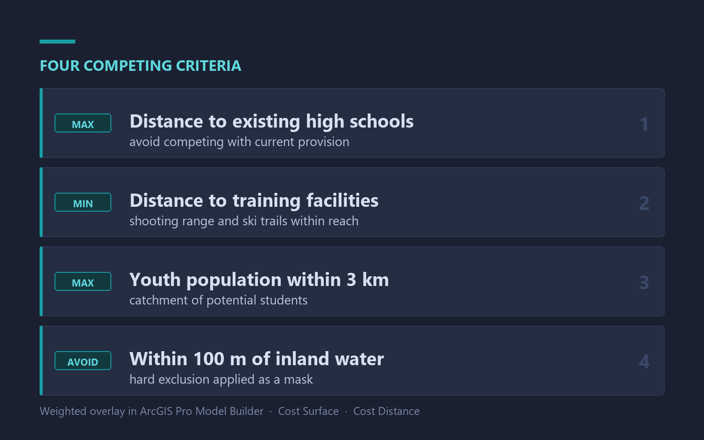

GeoQC Flow
Python CLI that automates QA across multi-step FileGDB pipelines
I work across the full geospatial stack: modelling, automation, and the data engineering that holds it together. Currently at Sharper Shape, building QA and integration tooling for large geodatabases. Before that, two years of spatial research at the Natural Resources Institute Finland (LUKE).
Below are 15 projects — professional, academic and personal — each with the method and the outcome.
Python CLI that automates QA across multi-step FileGDB pipelines
Drone point cloud to a full forest inventory in one command

M5StickC device showing the live electricity price at a glance

Andean topography at 2,850 m as a layered paper-cut map

Dagster on Kubernetes, FME, and Python delivery pipelines

18 forest structure variables regressed against collision density

Social use areas against flying squirrel habitat, three municipalities

Pasture digitisation and water sampling site selection for LUKE

Interactive viewshed map of three proposed sites near Joensuu

Interactive map ranking Valais settlements by avalanche risk

Siting a biathlon high school against four competing criteria

Interactive map comparing Kriging and IDW against the source grid

Python and R over a 16 x 16 m open forest inventory grid

Walking and driving service areas for every proposed stop, Canberra

Before and after bushfire analysis in MATLAB, south-west Australia